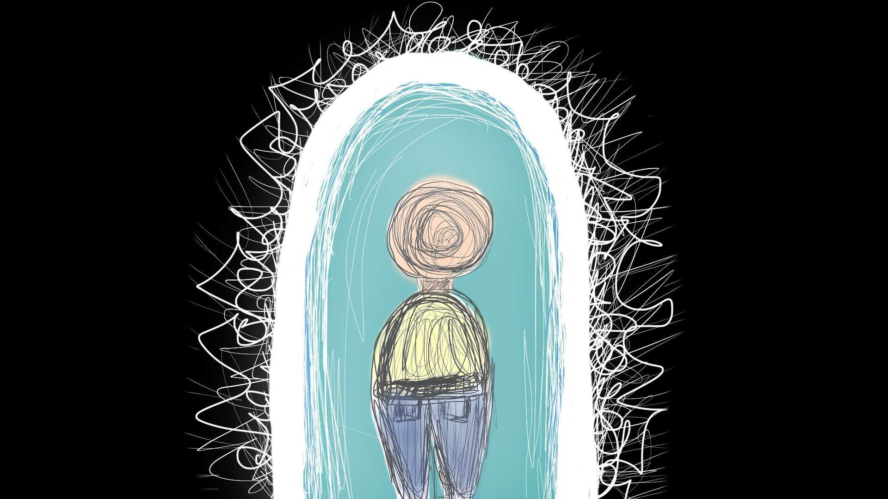

En la siguiente puerta la TV esta relampagueando cuadros azules sobre la pared es una comedia de errores, se trata sobre tener una recaída. Desvanecerse en el olvido, es fácil de hacer, y yo intento ser, pero me conoces, volveré cuando tu quieras.
